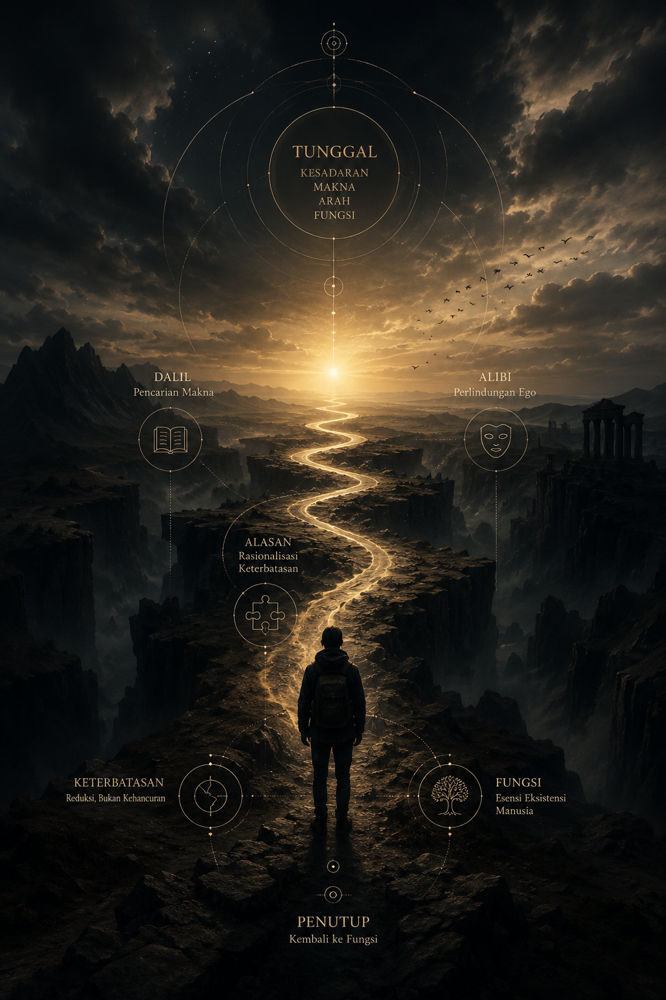

Ketika Fungsi, Kesadaran, dan Makna Bertemu di Titik Paling Sunyi
“Manusia tidak runtuh karena batasnya. Ia runtuh karena menolak untuk mengenal batas itu sendiri.”
Ada satu titik dalam perjalanan manusia yang tidak bisa dinegosiasikan oleh apa pun: pengalaman, ilmu, kekayaan, bahkan keyakinan.
Titik itu bernama keterbatasan.
Bukan keterbatasan sebagai kekurangan, tetapi keterbatasan sebagai realitas paling jujur dari eksistensi manusia. Di titik ini, semua konstruksi yang selama ini menopang identitas manusia mulai kehilangan fungsinya.
logika tidak lagi cukup menjelaskan arah
pengalaman tidak lagi menjamin hasil
strategi tidak lagi menjamin kontrol
bahkan keyakinan pun diuji dalam bentuk paling sunyi
Dan pada titik itu, manusia mulai kehilangan kebisingan luar…
untuk akhirnya mendengar sesuatu yang selama ini tertutup dirinya sendiri.
Keterbatasan sebagai Bentuk Kejujuran Realitas
Keterbatasan bukan hukuman.
Ia adalah mekanisme alamiah realitas untuk mengembalikan manusia ke posisi yang benar.
Manusia sering hidup dengan ilusi bahwa ia menguasai arah. Namun realitas tidak pernah benar-benar tunduk pada persepsi itu.
Ada momen ketika hidup secara perlahan menunjukkan:
bahwa waktu tidak bisa dipercepat
bahwa manusia lain tidak bisa dikendalikan
bahwa hasil tidak selalu linear dengan usaha
bahwa dunia tidak berutang konsistensi pada harapan
Di titik ini, keterbatasan menjadi bahasa.
Bukan bahasa yang keras.
Tapi bahasa yang tidak bisa dihindari.
Dan seperti semua bahasa yang jujur, ia tidak menjelaskan ia menunjukkan.
Dalil, Alibi, dan Alasan: Tiga Mekanisme Bertahan
Ketika manusia bertemu keterbatasannya, ada tiga respon dasar yang muncul secara alami.
Dalil - Pencarian Makna
Manusia tidak tahan hidup tanpa makna.
Maka ia menciptakan narasi untuk menjelaskan luka, kegagalan, atau ketidakpastian.
“Ini mungkin ujian.”
“Semua ada waktunya.”
“Ada hikmah di balik ini.”
Dalil bukan kebohongan.
Ia adalah cara kesadaran awal manusia untuk tetap berdiri.
Alibi - Perlindungan Ego
Ketika kenyataan terlalu berat, ego mencari ruang aman.
“Bukan saya sepenuhnya.”
“Situasinya tidak adil.”
“Faktor eksternal terlalu besar.”
Alibi bukan sekadar penghindaran.
Ia adalah mekanisme bertahan dari runtuhnya identitas.
Alasan - Rasionalisasi Keterbatasan
Manusia butuh merasa tetap logis di tengah kegagalan.
“Saya belum siap.”
“Waktunya belum tepat.”
“Sistemnya tidak mendukung.”
Alasan adalah jembatan antara realitas dan penerimaan diri.
Namun di atas semua itu, ada satu lapisan yang lebih dalam:
semua itu adalah cara manusia berdamai dengan sesuatu yang tidak bisa ia kontrol.
Tunggal: Kesadaran yang Menyederhanakan Segalanya
Semakin kompleks hidup, semakin manusia kehilangan arah.
Di titik tertentu, kompleksitas tidak lagi menjadi kekuatan, tetapi menjadi kabut.
Di sinilah konsep tunggal menjadi penting.
Bukan sekadar fokus.
Tapi pusat kesadaran yang menyatukan semua hal yang tersebar.
Satu poros.
Satu arah.
Satu makna yang tidak berubah oleh keadaan.
“Yang banyak menciptakan kebisingan. Yang satu menciptakan stabilitas.”
Kesadaran tunggal bukan menyederhanakan dunia.
Tapi menyederhanakan cara manusia melihat dunia.
Dan dalam penyederhanaan itu, muncul kejernihan.
Filosofis: Ketika Manusia Berhenti Melawan Realitas
Filsafat sering dianggap sebagai aktivitas berpikir.
Padahal pada tingkat terdalamnya, filsafat adalah momen ketika manusia berhenti berdebat dengan realitas.
Di titik keterbatasan:
manusia tidak lagi terlalu sibuk menjelaskan
manusia mulai mengamati
manusia mulai menerima tanpa harus menyerah secara mental
Dalil menjadi refleksi.
Alibi menjadi cermin.
Alasan menjadi pengakuan.
Dan di ruang itu, kesadaran berubah bentuk:
bukan lagi “mengapa ini terjadi”,
tetapi “apa yang sebenarnya sedang terjadi”.
Fungsi: Esensi Eksistensi Manusia
Di balik semua identitas, manusia selalu memiliki satu hal yang lebih stabil dari apa pun: fungsi.
Manusia bisa kehilangan peran sosialnya.
Bisa kehilangan status.
Bisa kehilangan validasi.
Tapi fungsi tidak hilang.
Ia hanya berubah bentuk.
Fungsi adalah alasan mengapa sesuatu tetap “hidup” dalam sistem.
Dan manusia, dalam perspektif ini, bukan sekadar individu.
Ia adalah bagian dari sistem kesadaran yang lebih besar.
“Nilai manusia bukan pada siapa ia terlihat, tetapi pada apa yang tetap bekerja melalui dirinya.”
Keterbatasan sebagai Reduksi, Bukan Kehancuran
Keterbatasan sering disalahpahami sebagai akhir.
Padahal ia lebih mirip proses reduksi.
Seperti sistem yang menghapus noise untuk menemukan sinyal.
Hidup secara perlahan menghilangkan:
hal yang tidak relevan
identitas yang tidak autentik
ambisi yang tidak lagi selaras
Dan yang tersisa adalah esensi.
Bukan versi sempurna manusia.
Tapi versi yang paling jujur.
Manusia Modern dan Ilusi Kontrol
Di era modern, manusia hidup dalam ilusi bahwa segala sesuatu bisa:
diukur
diprediksi
dioptimalkan
Namun realitas selalu menyimpan satu variabel yang tidak pernah bisa dikontrol sepenuhnya:
kehidupan itu sendiri.
Dan kehidupan tidak pernah bernegosiasi dengan ekspektasi.
Ia hanya berjalan.
Kadang sejalan.
Kadang berlawanan.
Kadang melampaui pemahaman.
Kesadaran Paling Dalam: Kembali ke Fungsi
Pada akhirnya, manusia tidak diminta menjadi sempurna.
Tidak diminta menjadi tak terbatas.
Tidak diminta menjadi selalu benar.
Yang diminta hanyalah satu hal:
tetap menjadi fungsi yang tepat di waktu yang tepat.
Karena ketika semua identitas runtuh, yang tersisa bukan lagi siapa kita…
melainkan:
apa yang tetap hidup melalui kita.
Penutup
Di ujung keterbatasan manusia, tidak ada akhir yang dramatis.
Tidak ada kehancuran besar.
Tidak ada jawaban instan.
Yang ada hanyalah keheningan.
Dan dalam keheningan itu, manusia tidak menjadi lebih kecil.
Ia menjadi lebih jelas.
Lebih sederhana.
Lebih jujur.
Lebih hadir.
Dan mungkin di situlah paradoks terbesar hidup:
keterbatasan tidak mengurangi manusia —
ia mengembalikan manusia ke bentuk paling esensialnya